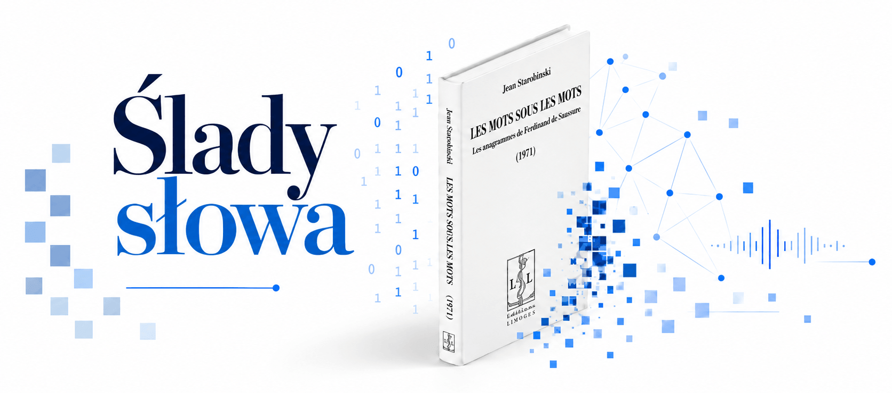

Cyfrowy eksperyment inspirowany koncepcją anagramów
odkrytą w notatkach Ferdinanda de Saussure'a
Po co powstaje ta strona?
Strona stanowi część projektu Cyfrowa analiza literatury ↗ i powstaje jako eksperyment służący zbadaniu (na materiale polskiej literatury) jednej z hipotez Ferdinanda de Saussure’a, która komplikowała niektóre strukturalistyczne założenia znane z Kursu językoznawstwa ogólnego i stała się przez to ważnym punktem odniesienia dla późniejszej myśli poststrukturalistycznej[1]. Jak wiemy z prywatnych notatników językoznawcy, w latach 1906–1909 prowadził on badania nad tzw. „anagramami”; wysunął przypuszczenie, że warstwa brzmieniowa niektórych tekstów poetyckich zostaje zorganizowana wokół ukrytego „słowa-tematu” (np. nazwy własnej lub konkretnego wyrazu), którego elementy foniczne zostają rozproszone w łańcuchu syntagmatycznym (mogą powracać jako pełna „konstelacja” składających się na słowo-temat fonemów, dopuszczająca różne ich permutacje, częściowa anafonia albo układ zamknięty w fonicznej ramie, tzw. „manekinie”[2]).
Uwagi o anagramach, w opisanym wyżej, odbiegającym od definicji słownikowej rozumieniu ich przez genewskiego językoznawcę, pozostawały w oczywistym napięciu z niektórymi podstawowymi założeniami strukturalizmu lingwistycznego. W modelu Saussure’owskim signifiant rozwija się linearnie, a jego związek z signifié jest czysto arbitralny. Anagramatyczna lektura wskazuje natomiast na możliwość występowania naddanego poziomu organizacji wypowiedzi: głoski należące do różnych wyrazów mogą jednocześnie tworzyć dodatkowe sieci relacji, co komplikuje pogląd zarówno o linearności, jak i arbitralności znaku językowego. Toteż notatnikowe obserwacje autora Kursu... – opublikowane w latach 60. i 70. przez Jeana Starobinskiego[3] – stały się ogromną inspiracją dla poststrukturalistów, m.in. dla Julii Kristevej, która na ich podstawie rozwinęła paragramatyczną koncepcję języka poetyckiego i semanalizę[4].
„W literaturoznawstwie francuskim – jak podsumował recepcję Saussure’owskich zapisków Adam Dziadek – fakt istnienia anagramów uznano za pewnego rodzaju oczywistość, i to do tego stopnia, że anagram fonetyczny figuruje w podręcznikach dla szkół średnich jako jeden z modeli lektury tekstu poetyckiego”[5]. Ale na gruncie polskim „próby lektury anagramatycznej są bardzo rzadkie, stanowią zjawisko marginalne”[6]. Właśnie ze względu na marginalność badań związanych z anagramami na materiale polskiej literatury powstaje niniejszy eksperyment. Będzie on polegał na próbie zoperacjonalizowania hipotezy de Saussure’a: sprawdzeniu za pomocą metod cyfrowych, czy pisanie o określonym przedmiocie (pojęciu czy bohaterze) istotnie może łączyć się w niektórych tekstach z powstaniem „uporządkowania naddanego”, które tworzy mierzalny, foniczny „ślad” tego przedmiotu rozsiany w łańcuchu syntagmatycznyma, a także na oszacowaniu skali tego zjawiska w obszernym materiale korpusowym.
Badanie pilotażowe – przykłady użycia narzędzia
Do pilotażowej analizy cyfrowej celowo wybrałam dramaty utrzymane w poetyce snu, gdzie do głosu dużo silniej dochodzi porządek „czystych” praw lingwistycznych, zwłaszcza metonimii – odpowiadającej syntagmatycznym kombinacjom w szereg, i metafory – odpowiadającej asocjacjom opartym na podobieństwie. Te dwie struktury formalne związane z przemieszczeniem i kondensacją były szczególnie interesujące dla poststrukturalistów, m.in. dla twórczo przeformułowujących Saussure'owską teorię języka: Julii Kristevej i Jacquesa Lacana. W kontekście spostrzeżeń wymienionych badaczy lektura anagramatyczna służyłaby ujawnieniu szczelin dyskursu kartezjańskiego „ja”. Tak ustawiona optyka daje ciekawe tropy interpretacyjne, które omawiam poniżej.
Przykład I: Analiza śladów fonicznych związanych z ukrywaną tożsamością Pustelnika w IV cz. Dziadów Adama Mickiewicza
Jak pamiętamy z IV cz. Dziadów, rozmowa między Pustelnikiem i Księdzem krąży m.in. wokół problemu tożsamościowego tego pierwszego. Bohater odmawia odpowiedzi na pytanie, kim jest (np. „Nazwiska, jeszcze rano, powiedzieć nie mogę” – w. 34) – i wydaje się, że w jakimś stopniu nad ukrywaniem swojej tożsamości (i szerzej: nad swoim mówieniem) udaje mu się panować (dostajemy sygnały jego świadomości metatekstowej w dialogu z interlokutorem).
Równocześnie funkcję dystorsyjną względem intencjonalnego dyskursu bohatera pełni częste przechodzenie w tryb swobodnej, asocjacyjnej organizacji wypowiedzi, gdzie tok wymyka się mówiącemu spod kontroli. Problem ten Pustelnik zresztą wprost komunikuje, odwołując się do poetyki snu:
Prawda! lecz to są ludzkiej własności narowy,
Że, co dzień cały w sercu tkwi boleśnie,
Na noc przechodzi do głowy:
Wtenczas człowiek sam nie wie, co rozplecie we śnie.
Dawno, dawno!… raz miałem przypadek ten samy.
Po pierwszym z nią widzeniu wróciwszy do domu
Poszedłem spać, ni słówka nie mówiąc nikomu.
Nazajutrz, gdy dzień dobry przyniosłem dla mamy:
„Co to jest, mówi do mnie, żeś taki pobożny?
Modlisz się przez noc całą, wzdychasz nieustannie
I litaniją mówisz o Najświętszej Pannie”.
Zrozumiałem i na noc zamknąłem podwoje,
Ale teraz nie mogę być równie ostrożny.
Nie mam domu; gdzie przyjdę, tam posłanie moje,
A często przez sen gadam… w myślach jak na fali!
Ustawna burza, zawieja,
Błyśnie i zmierzchnie,
Mnóstwo się zarysów skleja.
W zacytowanym fragmencie Pustelnik opowiada historię, w której mimowolnie ujawnił przez sen imię swojej ukochanej: Marii/Maryli (matka bohatera opacznie zinterpretowała je jako element modlitwy „do Najświętszej Panny”). Ale w perspektywie lektury anagramatycznej dochodzi tu także do jeszcze jednego ujawnienie: imienia podmiotu mówiącego, czyli Gustawa. Wprawdzie analiza cyfrowa wykazała, że rozproszone sekwencje liter g-u-s-t-a-w w oknie ustawionym na maksymalnie 2 wersy pojawiają się w dramacie wielokrotnie (i możliwe, że nie odstaje to statystycznie od przeciętnego tekstu), jednak tylko w jednym miejscu dochodzi do tak silnej kondensacji materiału fonicznego imienia – pojedyncze g zostaje zestawione z nieprzerwanym ciągiem ustaw:
A często przez sen gadam… w myślach jak na fali!
Ustawna burza [...].
Trudno ocenić, na ile to świadomy zabieg autora (szczególnie że w „gadam” odzywa się też imię Adam, co w kontekście uwikłania dramatu w wątki autobiograficzne nie wydaje się bez znaczenia), ale warto podkreślić, że litery przywołanego anagramu są zlokalizowane w semantycznie newralgicznych miejscach: w pozycji akcentowanej przed średniówką i w nagłosie kolejnego wersu (ich ścisłe zestrojenie z warstwą znaczeniową fragmentu, który mówi właśnie o mimowolnym ujawnieniu imienia, nabiera dodatkowej wagi).
Podobny pilotażowy test przeprowadziłam na imieniu „Maryla”. Pokazał on jeszcze wyraźniejszą regularność. Rozproszone sekwencje m-a-r-y-l-a występują w dramacie w wielu miejscach (z pewnością przypadkowo), jednak jedynymi przypadkami bardzo zwartego układu (mar–y–la) są dwa użycia formuły „umarły dla świata”. Oba pojawiają się w partii dialogu poświęconej pytaniu o tożsamość Pustelnika:
PUSTELNIK
Umarły!… o nie! tylko umarły dla świata!
Jestem pustelnik, czy mnie rozumiecie?
[...]
Otóż ja także umarły dla świata.
To bardzo interesujące spostrzeżenie z perspektywy teorii śmierci, którą Gustaw w dramacie wykłada – jest on bowiem „umarły dla świata” z powodu zaniku własnej podmiotowości w relacji diadycznej z kochanką (Marylą). W grze fonicznej stawiającej znak równości: „umarły dla świata” = „Maryla” ta prawda została ujęta.
Przedstawiona tu miniinterpretacja ma oczywiście charakter hipotetyczny i nie pozwala rozstrzygnąć, czy wskazane ślady foniczne są efektem świadomej organizacji tekstu, czy raczej incydentalnym rezultatem właściwości jego materiału językowego. Niemniej zastanawiające jest to, że w przypadku obu imion – Gustaw i Maryla – właśnie w miejscach poruszających w warstwie semantycznej kwestię tożsamości dochodzi do wyjątkowo zwartej kondensacji elementów słowa-tematu.
Przykład II: Sen srebrny Salomei Juliusza Słowackiego – podwójna tożsamość Semenki-Tymenki
Na materiale Snu srebrnego Salomei przebadałam gry foniczne związane z imieniem Semenki/Tymenki (jak pamiętamy, kozak służący u Regimentarza – Semenko okazuje się dowódcą koliszczyzny – Tymenką). Cyfrowa analiza ujawniła, że oprócz oczywistego podobieństwa obu imion dramat wykorzystuje również ich szczególną foniczną podatność na wzajemne nakładanie się. Na przykład w następujących fragmentach:
Ty szlachcianki tej odmówił!
Cóż, naprawdę, mój Semenko…
Cóż ty, Semenko?
Efekt podobnej interferencji dwóch ciągów fonicznych występuje również w symetrycznym odwróceniu:
Jest posłuch, że sam Tymenko
Kryje się w szlacheckich dworach,
Jak wilk nakryty owieczką
Materiał foniczny języka, wbrew świadomości mówiącego bohatera, zdradza prawdę, kto kryje się „jak wilk nakryty owieczką” pod imieniem Tymenki.
Narzędzie jest w budowie.
1. Wprowadź tekst
Zachowane są trzy sposoby pracy: wklejenie, plik TXT i biblioteka.
Wklej tekst
Wprowadź tekst bezpośrednio w polu.
Wczytaj plik .txt
Wybierz plik lub przeciągnij go na stronę.
Wybierz z biblioteki
Użyj tekstu z mojej biblioteki.
Wklej tekst
Wczytaj plik .txt
Wybierz z biblioteki
2. Podaj słowa-tematy
Możesz analizować kilka słów-tematów lub ciągów fonemicznych jednocześnie.
Wyniki analizy
Natężenie w ruchomym oknie wersów
Wartość pokazuje, ile wersów w każdym kolejnym oknie spełnia dane kryterium. Dzięki temu łatwo zobaczyć skupiska, np. 10 trafień na odcinku 20 wersów.
Najgęstsze fragmenty
Mapa rozkładu po całym tekście
Każdy segment odpowiada pojedynczemu wersowi albo grupie kolejnych wersów przy bardzo długim tekście. Niebieski oznacza trafienie z zachowaną kolejnością; fioletowy – tylko obecność wszystkich liter bez zachowania kolejności.
| Nr wersu | Bohater | Treść wersu | Słowo-temat z zachowaną kolejnością liter | Wszystkie litery słowa-tematu, niezależnie od kolejności |
|---|